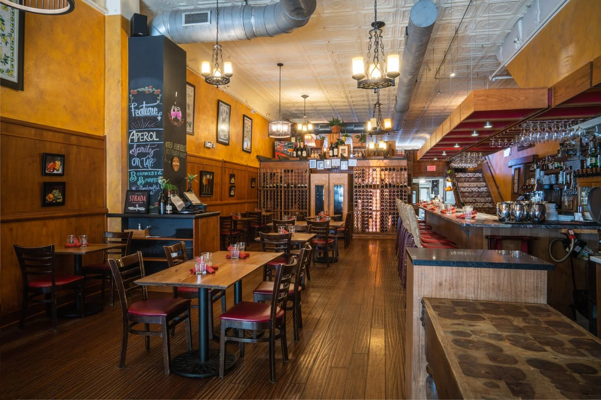
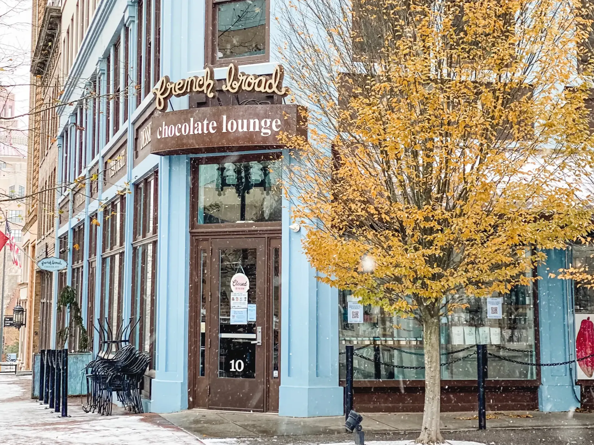

Food & Dining
Strada Italiano

Source: https://www.stradaasheville.com/dining-options
Strada Italiano is a cozy Italian/Italian-American restaurant featuring authentic house-made pasta and regional Italian specialties.
French Broad Chocolate Lounge

Source: frenchbroadchocolates.com
The French Broad Chocolate Lounge is a chocolate lover's paradise! Enjoy hand-crafted chocolates and pastries while sipping a coffee or glass of wine while lounging and admiring local art.